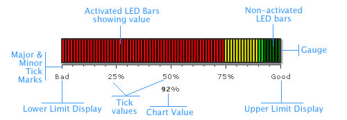

LED Gauge > Elements of the gauge |
A LED gauge consists of the following elements:
Here we’ll see each of them in detail. Let’s first have a look at a standard LED Gauge enlisting the various basic components: |
|  |
| Color Range The LED gauge is defined by minimum and maximum values. Within that scale you can create various ranges to classify your data. There can be any number of ranges as you wish to. For each range, you’ll have to specify the minimum and maximum limits, a name for the range and the hex color for the range. In the above chart, we have the chart with upper limit as 100 and lower limit as 0. And the color ranges are 0-30, 30-50 and 50-120. LED Bars & Gaps Tick Marks
For all the tick marks, you can specify the color and the height. Annotations Let’s now have a look at the XML required to create a LED gauge. |